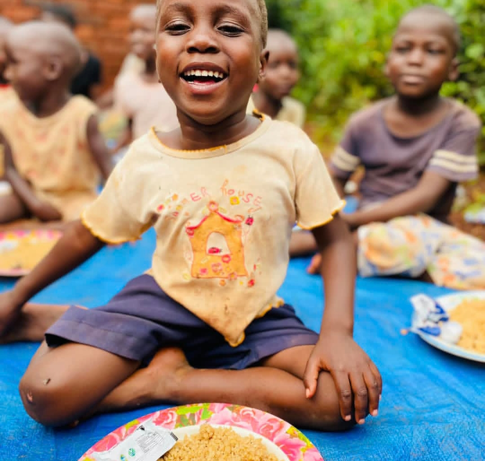
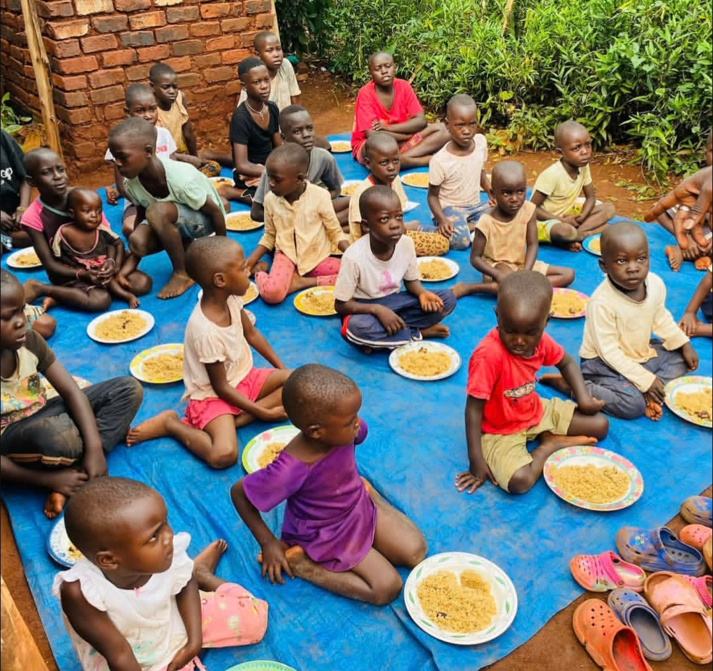
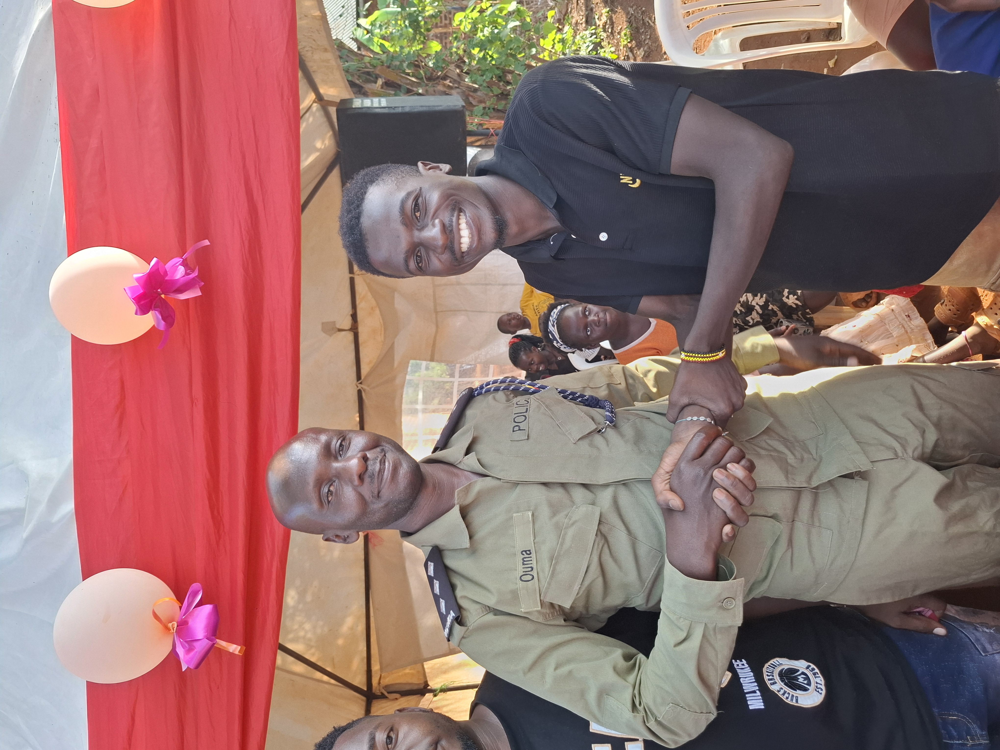
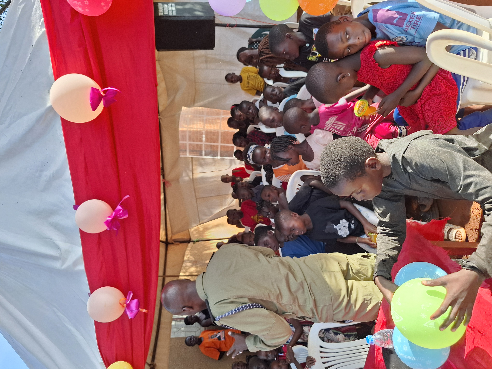
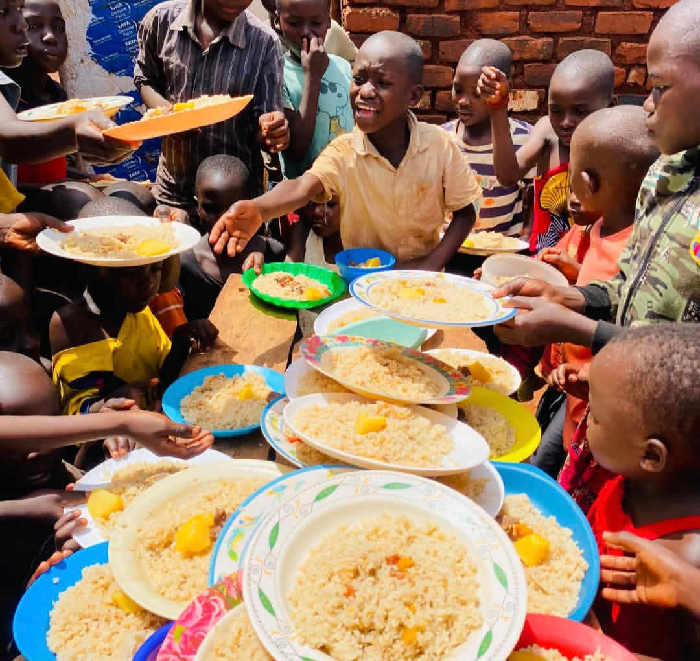
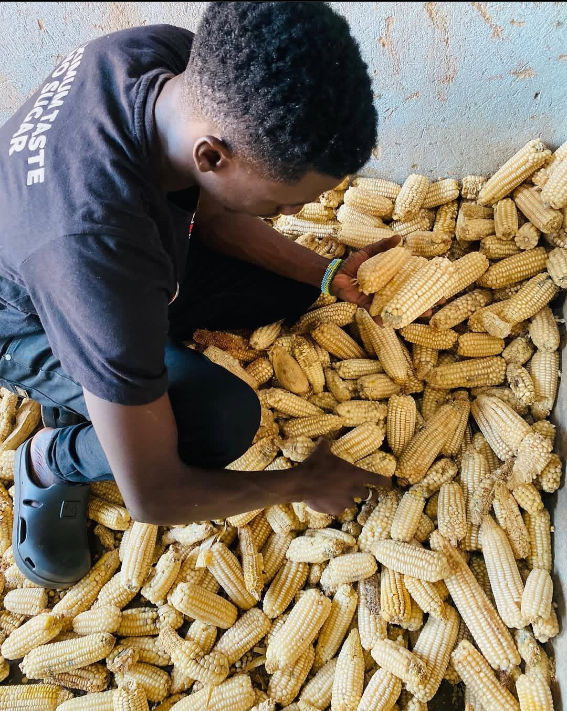
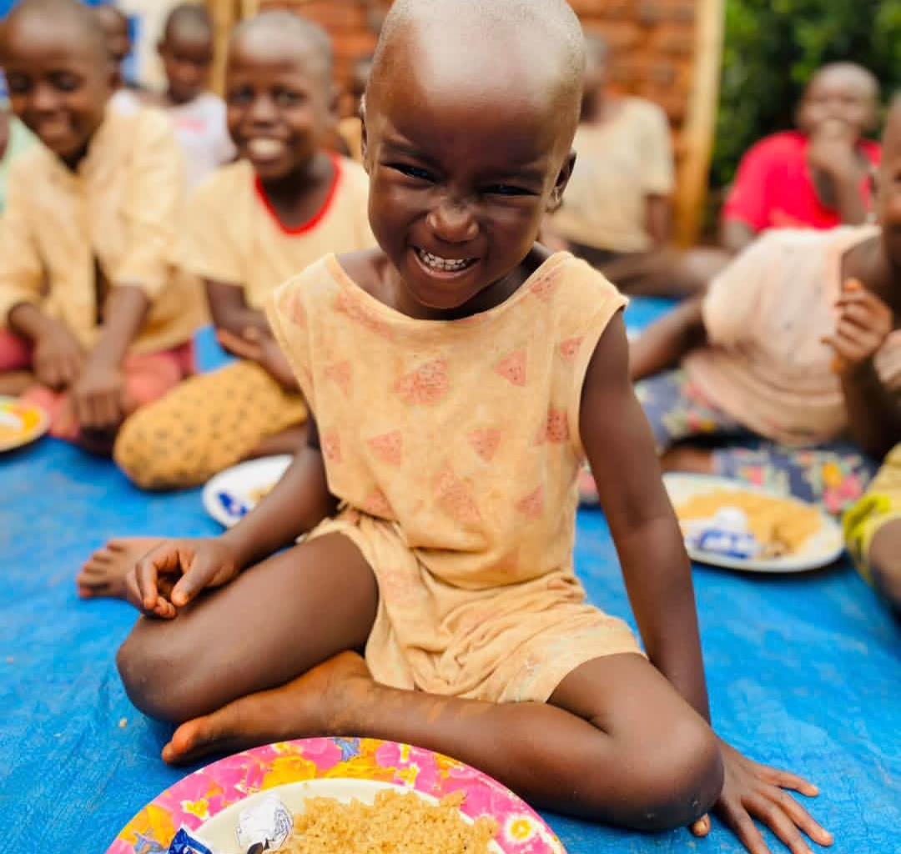
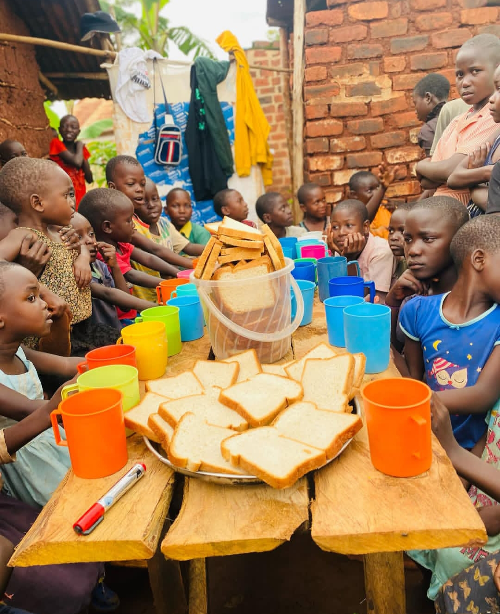
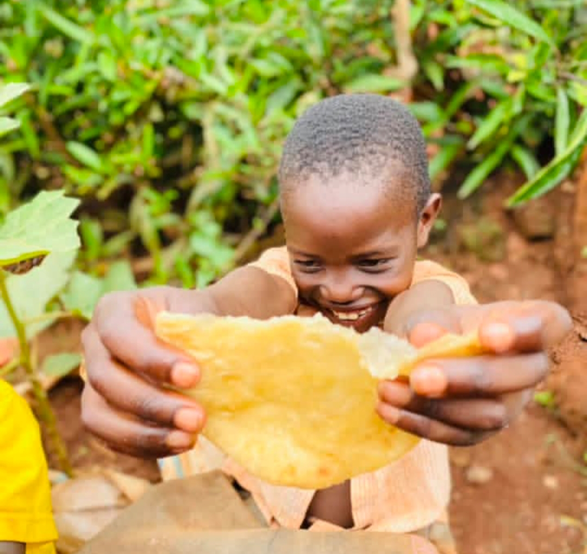
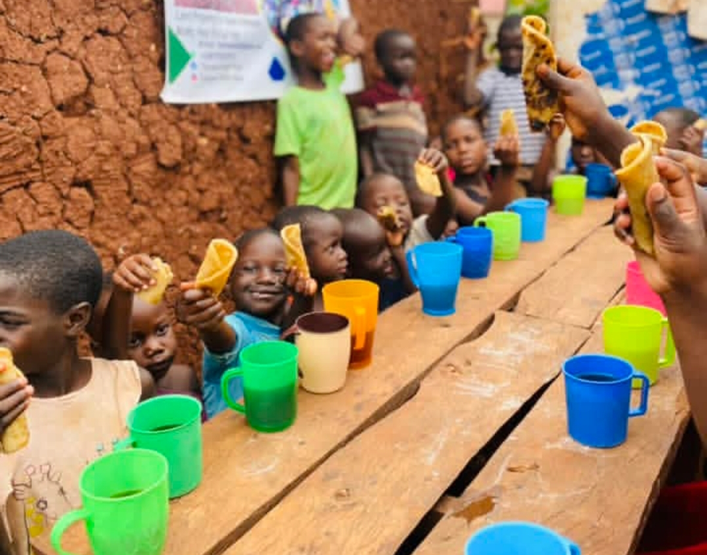

Our Vision
A Uganda where no child grows up without the certainty of being loved, sheltered, and given a chance to flourish.
Kwaja Uganda Orphanage
We walk with children who have known loss — offering them safety, belonging, and the tender certainty that they are cherished beyond measure.
Our Mission
Love heals broken worlds. We nurture forgotten souls with safety.


About Us
Kwaja Uganda is a home — not just a facility. We receive children who have been orphaned, abandoned, or left vulnerable by circumstance, and we pour into them with consistent love, nutritious meals, education, and the deep reassurance that they are not forgotten.
Built on faith and fueled by community, we believe that safety and love are the seeds from which all healing grows. Our doors are open, our hearts are wider.
Our Vision
A Uganda where no child grows up without the certainty of being loved, sheltered, and given a chance to flourish.
Our Values

Orphanage Director
Director & Founder of Kwaja Uganda
“Love heals broken worlds. We nurture forgotten souls with safety.”
Under the compassionate guidance of Director Tenywa Fatiik, Kwaja Uganda provides daily sanctuary, nutrition, healthcare, and education to orphaned and vulnerable children in Uganda. Connect with his ongoing work and videos through our social channels:
Every hand extended, every prayer offered, every donation made — it ripples through a child's life forever.
What We Do

A warm, secure home where every child sleeps soundly, knowing they are protected and not alone.

Three balanced meals every day — because a full stomach is where confidence and growth begin.

Farming, harvest storage, and hands-on skills that help our family grow its own food — and its future.
Medical checkups, vaccinations, vector protection, and trauma-informed care for every child.

Patience, counseling, and daily affection to mend wounded spirits and nurture inner joy.

Connecting children with local mentors, cultural roots, and positive peer relationships.
Photo Gallery
Every photo represents a story of rescue, safety, and hope restored.


Featured TikTok Videos
Watch real-time moments, daily joy, and stories shared directly by Director Tenywa Fatiik and the Kwaja Uganda family.
Latest Updates
Stories, milestones, and moments we want to share with everyone who cares about Kwaja Uganda.
Support Our Mission
“Love heals broken worlds. We nurture forgotten souls with safety.”
All financial gifts for Kwaja Uganda are received securely through our official GoFundMe campaign. Every dollar goes directly to shelter, nutritious food, tuition, and medical care for our children.
Click below to visit our verified campaign on GoFundMe. You can donate using Credit/Debit Card, Apple Pay, Google Pay, or PayPal from anywhere in the world.
Donate Now on GoFundMeGoFundMe link: https://gofund.me/e6ba4562
Get Involved
Whether you can offer time, skills, prayer, or a listening ear — there is a place for you at Kwaja Uganda. Reach out and let's talk about how you can help.